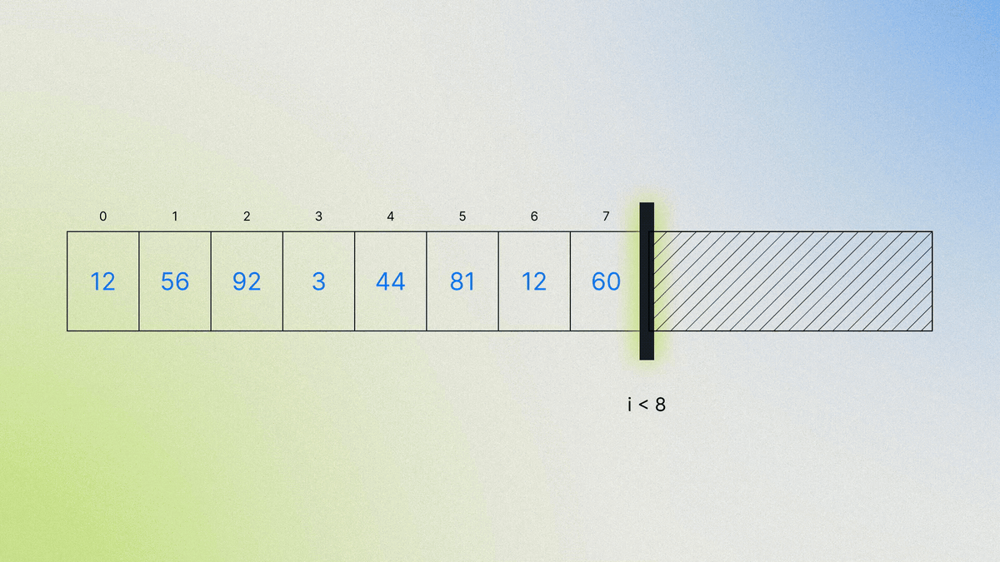
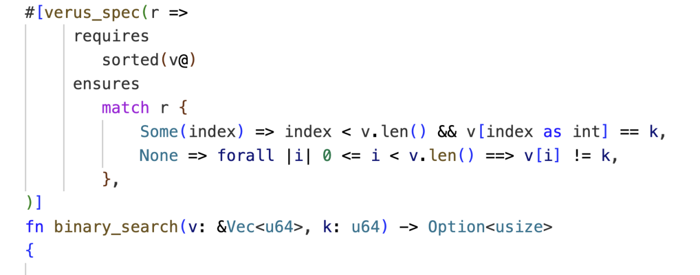

Rust的类型系统能让代码「更正确、更安全」，但「更正确」不等于「真的正确」：越界在C里是危险错误、在Rust里是程序终止，而真正正确的程序根本不会越界。Rust也保证不了程序算出的结果是否符合预期、或是否泄漏机密。这正是Verus登场的地方。
本文为Amazon Science官方博客解读，全中文编译，保留原文 ≥80% 内容与2张正文图。
Verus是一个开源的、自动化的Rust程序验证器。所谓「程序验证器」，指它接收描述代码应如何行为的形式化数学规格，然后机械化地检查代码是否在所有可能输入下匹配该规格。

例如：你的代码实现了一种优化的二分查找，用于在已排序数组里查找某个值。规格可声明：当代码成功返回索引时，该位置元素必须等于目标值。验证器会检查这一规格对所有可能的输入数组和目标值都成立。
相比之下，传统测试只试几个特定数组，可能漏掉边界情况（目标值是最后一个元素或根本不存在）。程序验证的关键是构造数学证明。在Verus这类自动化验证器里，工具自动处理繁琐底层的证明步骤，开发者只需提供高层指引（如建立归纳证明、提供循环不变量）。如今连这些高层步骤也常能由AI自动化完成。
亚马逊是Rust基金会的创始成员，并大量使用Rust开发项目：支撑AWS Lambda和AWS Fargate的Firecracker、负责Nitro虚拟机隔离的Nitro Isolation Engine。加上过去十多年自动推理研究积累，采用Verus提供更强保证成为自然选择。
事实上，亚马逊已用Verus证明了Nitro Isolation Engine关键原语的正确性，以及若干内部关键基础设施结构的正确性，具体用例将在后续文章详谈。
用Verus，开发者直接在Rust源文件中为现有代码添加规格（和证明）。延续二分查找例子，下面是search函数现有Rust实现的Verus规格（以Rust注解书写）：

前置条件（requires关键字）声明函数执行前必须为真的条件。此例中由于是二分查找，要求数组已排序。
后置条件（ensures关键字）声明函数执行后必须为真的条件。此例中：如果函数返回Some(index)，则该index在数组边界内、且该位置元素等于目标值。
重要地，它也说明如果返回None，则目标值不在数组中。若没有这第二条从句，一个总是返回None的实现也能满足规格！ 普通Rust编译器会忽略这些Verus注解，因此带注解代码可用于已验证和未验证项目，包括用Cargo的项目。
这个例子体现了Verus关键设计决策：由开发者用类Rust语法直接在源码里写规格和证明。证明失败时看到的是源码层面的Rust风格错误信息，使证明与实际代码保持同步，开发者无需学新语言/工具，最了解代码的人能参与证明其正确性。
Verus专注快速、强大的自动化，用多种求解器处理生成的证明义务。实践中开发者通常能在一秒内收到反馈，支撑交互式开发（包括VS Code的「红色波浪线」）。
项目层面，Verus能在某些先前自动验证器验证单个函数所需的时间内，验证数千行代码和证明的复杂项目。这种自动化与快速反馈既帮了人类，也帮了AI智能体：自动化意味着智能体工作更少、更能快速迭代证明。
Rust类型系统提供强安全保证，但有时阻止高性能代码。因此Rust允许写显式标注unsafe的代码：仍需满足对安全代码的全部期望，但编译器不再机检，靠开发者保证。用Verus，开发者能数学上证明unsafe Rust代码的安全性，重建立机检安全保证。
Rust以「无畏并发」著称：类型系统可防止其他语言允许的许多并发错误。Verus在此基础上让开发者证明并发代码不仅安全、而且正确。
并发通常涉及锁，它让一线程独占访问数据。Verus允许给锁添加不变量（invariant）属性：获得锁者得到满足不变量的值（如恒为偶数），释放时须证明值仍满足该属性；Verus还支持证明锁实现本身的正确性。这对Nitro Isolation Engine这类依赖复杂定制锁方案的高性能程序尤为重要。
与所有程序验证器一样，Verus的保证依赖于：Verus自身正确性、程序预期行为的「顶层」规格、对底层运行时（如Rust标准库）的「底层」假设，以及把源码转成可执行程序的编译器工具链正确性。后续文章详谈如何增强对这些组件的信心。
除亚马逊外，Verus还被用于为多种开源项目证明有趣属性。Verus本身也是自由开源项目，由学术界和工业界研究者分布式协作开发。相关阅读：Isabelle/HOL · Nitro Hypervisor · XEX分组加密结构（Amazon Science相关文章）。
参考：https://www.amazon.science/blog/developing-provably-correct-rust-code-with-verus